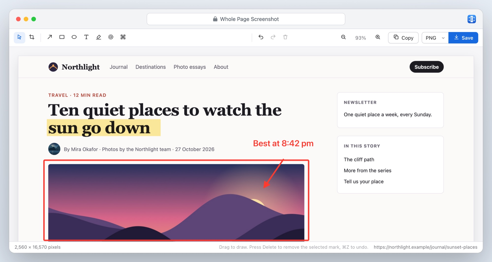
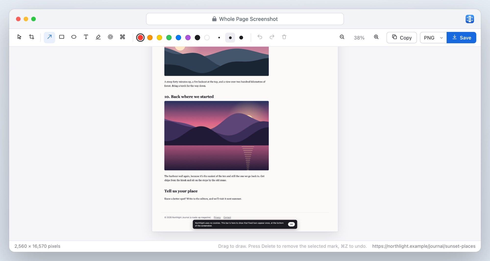
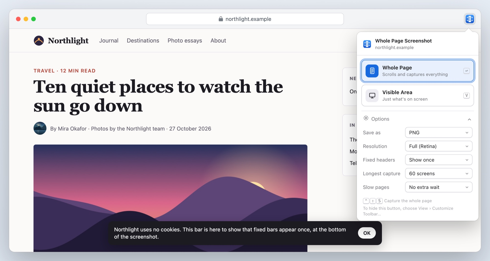
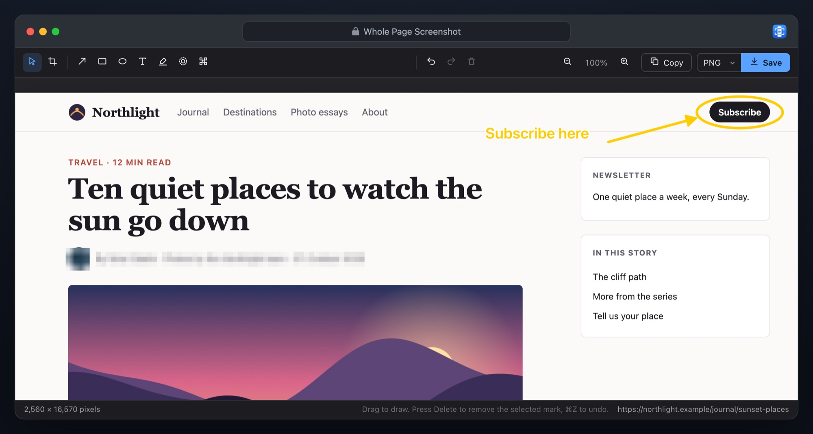
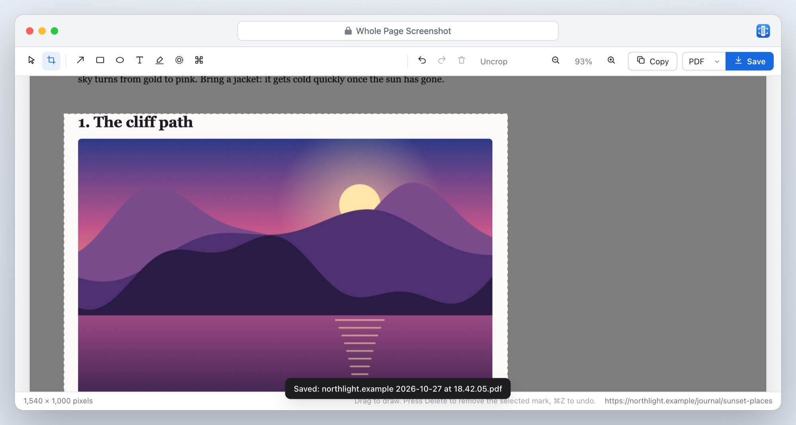

A Safari extension for Mac, iPhone and iPad
The whole page. One picture.
Whole Page Screenshot scrolls a web page from top to bottom and joins it into one sharp picture: the header once, every lazy picture loaded, nothing cut off. Then crop it, mark it up, blur what’s private, and save.
€1.99 one-time purchase for Mac, iPhone and iPad · No data collected

Three steps, no setup
Nothing to configure and no website access to grant in advance.
1. Click Whole Page
On any page, click the button in the toolbar, or press ⌃⇧S. It scrolls the page for you and puts it back where you were.
2. Mark it up
Arrows, boxes, text and highlights. Blur or pixelate names, emails and anything else private. Crop to what matters.
3. Save or copy
PNG at your screen’s full resolution, JPEG at the quality you choose, or a PDF in A4 or Letter pages. Or copy it and paste anywhere.
The hard pages, done right
Most full-page tools join screenshots and hope. Whole Page Screenshot prepares the page first.
Sticky headers
The header once, at the top
Sticky headers, floating buttons and cookie bars appear once, where they belong, instead of on every screen of the picture.
- Sticky sidebars and table headers stay in their place
- Bottom bars appear once, at the bottom
- Or keep them on every screen, if that’s what you need

Every picture
Lazy pictures loaded, nothing cut off
Before it captures, Whole Page Screenshot wakes pictures that load as you scroll and waits for them. The last screen lands exactly where the page ends.
- Web mail, chat and help desk pages: the inner scrolling area is captured in full
- Pages wider than the window are captured across as well as down
- Endless feeds stop at a length you choose

The editor
Mark it up, blur what’s private
Draw arrows, rectangles and ellipses, add text and highlights, and blur or pixelate anything you don’t want to share. Crop, undo, move and recolour as you go.
- Keyboard shortcuts for every tool
- Zoom from the whole page to the actual pixels
- Blurred areas are rebuilt from a few pixels: nothing of the original is left in the file

Files
PNG, JPEG or PDF, your way
Retina sharp, or one pixel per point to keep files small. JPEG quality you set yourself. PDF in A4 or Letter pages, or one long page.
- Very long pages are saved in numbered parts instead of failing
- File names with the site, date and time
- Copy to the clipboard in one click

And all the small things
Private
Captures only when you ask. No account, no analytics, nothing sent anywhere.
Light and dark
The popup and the editor follow your device.
Keyboard first
⌃⇧S to capture, a letter for each tool, ⌘C to copy, ⌘S to save.
Your page, untouched
After the capture the page is back exactly as it was, scrolled to where you were reading.
Frames included
Embedded maps, videos and frames are part of the picture, exactly as you see them.
Right-click too
Capture Whole Page and Capture Visible Area in every page’s menu.
Whole Page Screenshot
€1.99 once
- One-time purchase, no subscription, no watermark
- Every feature included
- One purchase for Mac, iPhone and iPad
- macOS 12 or later with Safari 16.4 or later, Apple silicon and Intel
- iOS 18 or iPadOS 18 or later
Prices in other countries are set by the App Store.
Questions
Which pages can it capture?
Any web page you have open, when you click or tap its button. Safari doesn’t let extensions capture its own pages, such as Settings or the Start Page, or the App Store.
Why doesn’t it ask for access to all websites?
It doesn’t need it. Safari lets Whole Page Screenshot capture the page in front of you at the moment you click or tap its button, and nothing else.
How long can a page be?
As long as you like, up to the limit you set in Options (60 screens to start with). Pictures taller than one file can hold are saved in numbered parts.
Where do files go?
On a Mac, to Safari’s download folder, usually Downloads. On iPhone and iPad, wherever you choose in the share sheet: Files, Photos, Mail, Messages or AirDrop. Either way the file is named after the site, with the date and time.
What data does it collect?
None. Read the privacy policy.
Is there an iPhone or iPad version?
Yes. One purchase covers Safari on your Mac, iPhone and iPad. On iPhone and iPad, tap the page menu button beside the address, then Whole Page Screenshot.